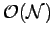

Next: About this document ...
Up: memd
Previous: Yukawa screening
-
- 1
-
Rottler J and Maggs A C Local molecular dynamics with coulombic
interaction cond-mat/0312438
- 2
-
Pasichnyk I Novel simulation methods for Coulomb and hydrodynamic interactions, PhD thesis, Mainz, 2004
- 3
-
Rottler J and Maggs A C A Continuum,  Monte-Carlo algorithm for charged particles, Journal of Chemical Physics, 120, 3119-3129, 2004
- 4
-
See web site http://www.espresso.mpg.de
Igor Pasichnyk
2004-09-07